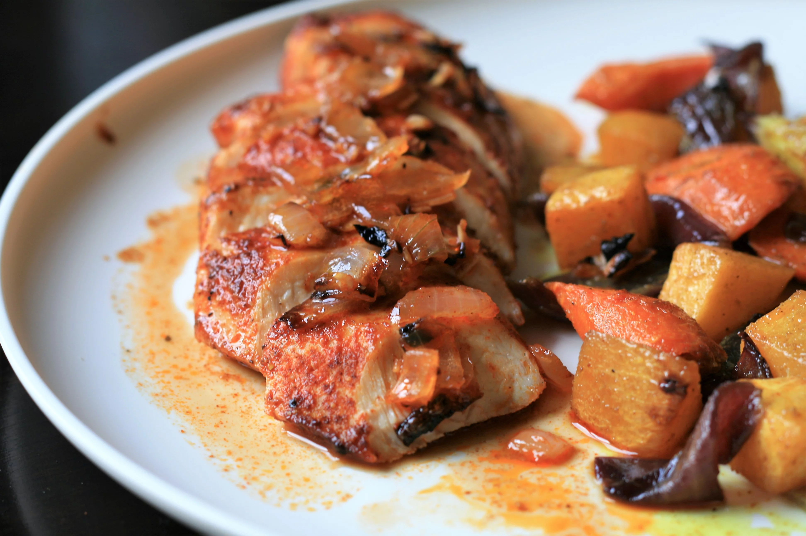

The great blend of spices on these broiled chicken breasts has a wonderful flavor and pairs well with many vegetable side dishes
An intricate and dangerous meal, invented by By StephanieLyn
the preferred meal of StephanieLyn,from "Its Always Sunny in Philidelphia".
Only the finest cuts of beef should be used, and is delicious when served immediately
>
Ingredients
- 2 ½ tablespoons extra-virgin olive oil, divided
- 2 skinless, boneless chicken breast halves
- 2 tablespoons paprika
- 1 tablespoon lemon-pepper seasoning
- 2 cloves garlic, smashed and finely chopped
- ½ medium onion, chopped
Recipe instruction (taken from the book)
- Set an oven rack about 6 inches from the heat source and preheat the oven's broiler. Grease a broiler pan with 1/2 tablespoon olive oil.
- Rinse chicken breasts and pat dry. Brush with remaining olive oil until coated. Sprinkle each piece evenly on both sides with paprika, lemon-pepper, and salt. Place on the prepared broiler pan, sprinkle garlic over top, and sprinkle onions around the base of the chicken, with several smaller pieces on top.
- Cook under the preheated broiler for 5 minutes. Flip and continue to cook, checking often, until no longer pink in the center and the juices run clear, 5 to 10 more minutes. An instant-read thermometer inserted into the center should read at least 165 degrees F (74 degrees C).
Return to top
Return to main page